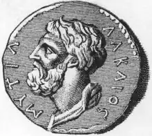

АЛКЕЙ (к. VII — поч. VI ст. до н. е.) — давньогрецький поет-лірик.
Рідне місто А. — Мітілена пройшло характерний для тих часів шлях боротьби демосу з аристократією. Боротьба з тиранією на боці аристократії закінчилася для А. вигнанням, під час якого він став воїном-найманцем, брав участь у боях у Фракії та Єгипті. Після амністії поет повернувся і навіть замирився і потоваришував із вождем мітіленського демосу, мудрим тираном Піттаком, з яким до того довгий час боровся. До нашого часу дійшло кілька віршів А. часів громадянської війни, у яких поет закликав до повстання і боротьби з демосом і Піттаком (т. зв. "Пісні заколоту"). Ще раніше нестриманість і завзятість А. виявилися у боротьбі з ненависним тираном Мірсилом, і коли той несподівано помер, бурхливі почуття радості поета вилилися в знаменитих поетичних рядках:
Пити, почнемо пить! І сп'яніймо всі, Хоч і не хочеш, пий! Бо вже здох Мірсил! (Пер. Н. Пащенко) У ряді віршів А. намагається дискредитувати Піттака, називаючи його "ворогом міста", "виродком вітчизни". У "Посланні Піттаку" поет дорікає йому за те, що той не повернув його з вигнання і повисилав багатьох корисних місту людей. Проте в цих політичних віршах А. не можна знайти такої злісної ненависті до демосу та його вождів, як у Феогніда, у нього скоріше відчувається скорбота людини, яка бачить несправедливість і страждає, не маючи змоги чимось зарадити. У кількох фрагментах віршів А. з'являється образ корабля, що потрапив у бурю. Один із них вражає своєю поетичністю та глибиною змісту і сприймається як алегорія, хоча поет її так і не розкриває. В описі драматичної епопеї корабля-держави, що от-от має загинути від страшних хвиль-потрясінь і що його намагаються врятувати відважні моряки, відчувається пристрасність почуттів поета. Реалістично і дуже стисло відтворює А. відчайдушну боротьбу корабля за своє існування: Не розумію звади поміж вітрів, Шаліють хвилі, линуть сюди й туди... А ми в розбурхану негоду В чорнім судні серед хвиль кружляєм, Жорстоко гнані нападом бурі злим. Сягають хвилі аж до підніжжя щогл, Вітрило наше розірвалось, Тільки лахміття по вітру має. Але найвище посеред хвиль лихих Іще грізніший вал підіймається, Біду віщує нездоланну, Перш ніж боги пристань пошлють нам... (Пер. Г. Кочура) Порівняння корабля з державою виявилося надзвичайно вдалим, особливо в періоди потрясінь. Цей образ перейшов у римську та новітню літературу. Вірш закінчується сумними думками поета про неминучість катастрофи, він висловлює бажання "забути все" і побоювання щодо власної долі. Найчастіше А. постає у своїх творах пристрасним і бунтівливим борцем, котрому не завжди щастить. Зазнавав він поразок і на полі бою. Як і Архілоху, йому довелося рятуватися втечею і кинути свій щит. У зверненні до друга він пише: Моїм повідай, що Алкей живий! Та обладунок зиик. Вояк аттичний Повісив, сміючись, мій щит жаданий У храмі совоокої богині. (Пер. Н. Пащенко) А. оспівував чоловічу дружбу, насолоду, ику відчуває, підносячи келих з вином. Звертаючись до друга Меланіппа, поет запрошує його пити й не думати про майбутнє, бо "плач не плач — шлях неминучий, попереду тільки смерть". Почуття безнадійності виникло у віршах А. після поразки у боротьбі з тиранією, а, можливо, і на початку вигнання, коли майбутнє бачилося позбавленим перспектив. Одійшовши після повернення на Лесбос від усякої політики, А. поринув у традиційні для монодичної лірики теми вина та кохай ия. Постійний заклик "Питимемо!" стає своєрідним рефреном у багатьох його сколіях. Поет уважає вино найкращим засобом, щоб забути всякі прикрощі й турботи, щоб розвеселитися. Вино є справжнім другом, оскільки може відкрити істину. Бажання пити поет виправдовує навіть будь-яким сезоном року. Вино для нього — це найкращі ліки з ліків. Значне місце в ліриці А. належить темі кохання. В одному чотиривірші він з гумором звертається до Ерота, називаючи цього юного бога "найстрашнішим з усіх безсмертних". Як правило, до почуття кохання А. ставиться досить серйозно і цнотливо. Це засвідчує, зокрема, його звернення до своєї уславленої співвітчизниці Сапфо, яку поет, мабуть, ніжно кохав: Сказати дещо хочу тобі одній, Але як тільки глянеш на мене ти, — Уста мої замикає сором, Перед тобою стою безмовний. (Тут і далі пер. А. Содомори) Проте А., очевидно, не виправдовує надто сильні пристрасті, що можуть примусити забути обов'язок чи пролити кров. У вірші, умовно названому "Провина Єлени ", він саме в цьому обвинувачує героїню. її кохання до Паріса спричинило трагічну долю Трої: Біль гіркий колись переніс, говорять, Цар Пріам з дітьми через твій, Єлено, Злочин, як спалив Іліон священний Зевс-громовержець. Не з такою в колі богів весілля Еакід справляв, а з палат Нерея В дім Кентавра він заманив любов'ю Дівчину ніжну. Так колись Пелей иа дівочім стані Пояс розв'язав, і жаданим шлюбом Поєднались він і дочка найкраща Бога Нерея. Рік минув — родився півбог безстрашний, Син білявий в них, жеребців погонич, А з вини Єлени в боях фрігійці Кров'ю стікали. Ще до А. лесбоські поети, використовуючи місцеві народні пісні, ввели в монодичний мелос низку нових поетичних прийомів і розмірів. А. продовжив цю традицію і залишив т. зв. "алкеєву строфу" — чотиривірш із складною ритмікою, що пізніше зажив чималої слави. Алкеєм був також написаний ряд чудових гімнів, присвячених Ероту, Гермесу, Афіні, Гефесту й Аполлону. До нас дійшли невеличкі їхні уривки, гімн до Аполлона докладно відомий з прозового переказу. Навіть у ньому вражає тонке й проникливе відчуття поетом природи. Пізніші покоління цінували А як одного з най-видатніших ліриків Еллади.